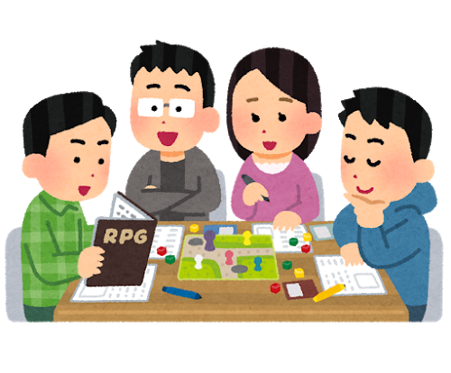
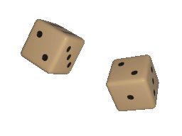

Basic Rules
How to play
In most cases, a COC game will be played by about three to six people sitting around a table (or using any communication medium), holding paper, pen and "instruction book", one of the members acts as the "Secrets Keeper"(KP) and the others act as "Players"(PL). PL will create a "Investigtor" card (PC) to play their respective roles, and the KP describes the structure of the world by reading "modules" (the media that record the background/ details of the stage of story) and handles the consequences of the PL's actions. At the same time, everyone follows the rules and instructions in the rulebook to create a story that may be of various kinds, including horror and bizarre, or an adventurous monster-slaying story.

Skill Rolls
Now, some questions may rise up from your mind: So KP can decide all the fate of the PC? Is it being
too unfair? Well, here is the system to solve this problem, rolling dice. It may be
6-sided dice, 2-sided dice (or coin), but usually we use a 100-sided dice (two 10-sided dice).
When PL want to or KP want the NPC to do some specific actions, they have to roll a 100-sided dice.
Then, the point of rolling will use to compare the value of their related skill (1-100, bigger means better)
of the PC. Six result may happen if you roll a point of:
- 01: Critical success. You complete achieve the goal you want and KP have to give you some bonus.
- ≤⅕value of skill: Extreme Difficulty Level. You finish the task on the borders of human capability.
- ≤½value of skill: Hard Difficulty Level. Complete the task with exceptionally difficult movement.
- ≤value of skill: Regular Difficulty Level. You have done the action you wanted normally.
- ＞value of skill: Fail. You get a fail as usual.
- 96-100: Fumble. You ruined everything and KP have to give you some punishments.

Opposed Rolls
When two PC/NPC/Enemy are opposing one another, we can have a oppoesd rolls to decide the winner. Both roll against agreed skill or characteristic. The one with the best level of success wins:
- A Critical success beats an Extreme success.
- An Extreme success beats a Hard success.
- A Hard success beats a Regular success.
- A Regular success beats a Failure or Fumble.
In the case of a tie, the side with the higher skill (or characteristic) wins, unless for special case. If still tied either an impasse has been reached or both sides should re-roll. Opposed rolls cannot be pushed.
Bonus Dice and Penalty Dice
For each bonus dice : roll an additional tens percentile dice alongside the usual pair of percentile dice when making a
skill roll (rolling 3 separate dice: one units die and two tens dice). Use the tens dice that yields the better (lower) result.
Note: In this platform, it is recommended to do the d100 dice twice directly and take out the lower result.
For each penalty dice: roll an additional tens percentage dice alongside the usual pair of percentage dice (rolling 3 separate
dice: one units dice and two tens dice). Use the tens dice that yields the worse (higher) result.
Note: In this platform, it is recommended to do the d100 dice twice directly and take out the higher result.
How to end the game
You may wondering how to count as win or lose in this game. The answer is-- as you like. Just like a ending of a movie, a novel or an animation is good or not is depend on the audience, so do a COC game. Only you can give the ending of PC a definition. But there are still various situations that count as game over: All PC Dead/Leave the stage, All the designed event of the story is finished, Both KP and PL want to end the game .